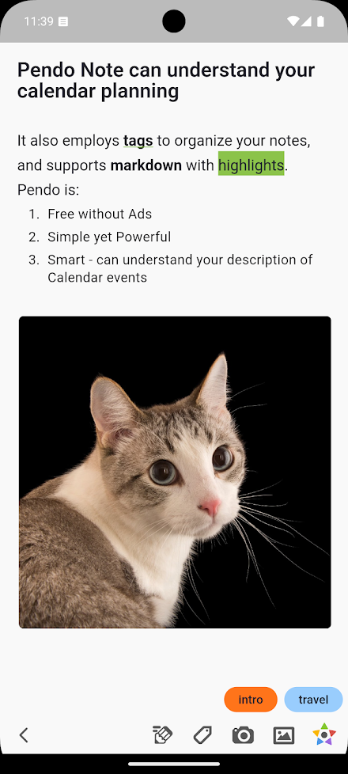

Pendo 到底是什么？一篇快问快答讲清楚
整理了关于 Pendo 这款手机记录应用的一组高频问答——从它的设计理念、版本差异到核心功能和典型场景，一次看懂。
整理一篇关于 Pendo 的快问快答，把你可能关心的点一次问透。
Pendo 到底是干什么的？
一句话：它是pendo官网上主推的一款以时间线为核心的记录工具。大多数效率 APP 会把笔记、待办、日程拆成三个 tab 让你来回切，Pendo 反其道而行之——所有内容按时间自动混排在同一条时间线上，你打开就是"今天做了什么、想了什么、还有什么要做"的完整视图。定位上它不是深度笔记库（那个位置 Notion、印象笔记更合适），而是高频记录入口——先把零碎想法、会议纪要、待办清单收进来，再用标签和时间帮你归位。
谁适合用 Pendo？
如果你满足以下任意一条，Pendo 可能比你现在用的工具更顺手：
- 每天要记的东西杂（灵感、待办、会议、想法混在一起），但不想开三个 APP 来回切
- 晚上复盘时发现自己今天干了什么要翻好几个软件才能拼出来
- 讨厌"先分类再动笔"的门槛——想到就写，分类留给时间线自动归位
不太适合的场景：需要组织复杂知识体系、做长期归档、团队协作——这些用专门的文档或协作工具更好。
安装需要注意什么？
Pendo 的 Android 端和 iOS 端版本号差得很远——iOS 已经到 8.x，安卓还在 2.x 徘徊。这不是安卓版停更了，而是 Lychee Isle 采用了双版本线独立迭代策略，两条线互相独立，安卓不会追 iOS 的版本号。核心记录功能两条线是一致的，但 iOS 8.x 有几个独有特性：AI 助手 Catbot、iCloud 全量同步、Apple Watch 表盘、VisionOS 适配。安卓 2.x 保持"能用就好"的稳定节奏，纯记录用户完全够用。要装的话，去pendo下载拿包就行。装包时别拿着 iOS 新功能的教程去套安卓界面——按教程操作发现不一样是正常的。
时间线这个设计好在哪？
核心解决三个痛点：
- 分类焦虑——"下午买牛奶"到底算待办还是日程？Pendo 的答案是"先记下来，时间会帮你归位"：有明确时间点自然变成日程，要做完的事自然沉底成待办。
- 复盘跨应用——晚上想知道今天做了什么，不用分别打开笔记、待办、日历翻三遍，时间线把三类内容按时间戳自动混排，一眼看完。
- 短期记录割裂——早上灵光一闪的笔记、上午的会议日程、中午列的待办，在传统 APP 里分散在三个模块，时间线让它们在视觉上连在一起，看屏幕就知道"上午在做决策、下午要执行"。
但时间线不是万能的——月度回顾或年度归档还是得靠标签筛选，Pendo 也提供了。

核心功能有哪些是我一上手就能用的？
三个细节控设计值得单独说：
单字母快捷命令。C（Capture，捕获）、T（Todo，待办）、E（Event，日程）——写完内容敲一个字母就能把这条记录切换成对应类型，不用进编辑页找选项。这是 Pendo 的招牌交互。
双指捏合调字号。在任意笔记的正文区域双指张开放大、捏合缩小，实时预览，只影响当前这篇笔记，不碰系统字号设置。对比传统 APP 的"设置 → 显示 → 字号 → 拖滑块 → 确认 → 返回"六步交互，这个 0.5 秒就搞定。手势限定了作用区域：笔记正文上捏合 = 调字号，插图上捏合 = 缩放图片，两个手势不冲突。
插图嵌入。底部工具栏的图片图标点一下，从相册选、直接拍照都行，图片嵌入在光标位置，自动适配宽度。插图后可以点击放大、长按拖动（某些版本）、长按删除，还能加 caption。写完带图的笔记还能一键快照成长图分享。
有什么坑要提前知道？
几个容易踩到的点：
- 插图大小有限制，某些版本对单张图片卡 5MB 以内，太大的可能自动压缩或插入失败。主流格式 JPEG、PNG、GIF、WebP 都支持，但单次笔记里塞十几张以上时间线会挤。
- 安卓 2.x 和 iOS 8.x 功能有差。iOS 端有标记图片、扫描文档、Apple Watch 插图同步这些额外特性，安卓端不一定有。别在安卓上找 iOS 教程里的按钮，遇到疑问去pendo文档核对版本差异就行。
- 安卓端同步靠本地或手动导出，不像 iOS 有 iCloud 全量同步。要跨设备用得自己找同步方案。
和同类比怎么样？
和传统笔记 APP 比，Pendo 最大的不同是取消了分类入口——你不用先想"这条该放笔记还是待办还是日程"，先记下来再说。和 Microsoft To Do、滴答清单这类纯待办比，Pendo 多了笔记和时间线混排，不再是待办的单一视图。和 Notion、Obsidian 这类重知识管理的比，Pendo 轻量得多，打开就能记，没有结构化门槛。
换句话说，如果你已经有了 Notion 当"大脑"，Pendo 就是你的"笔"——随手记、快速整理、即时回顾，两个工具配合比二选一好用。
值不值得长期用？
适合高频记录、讨厌分类门槛、追求"打开就写"体验的人。核心功能两条版本线都稳定，双指调字号、单字母命令这些细节控交互用惯了会回不去。纯记录用户不必纠结 iOS 的 AI 助手 Catbot——没有它也不影响日常用。
最后一句：如果你现在每天在笔记、待办、日历三个 APP 之间来回切得烦，Pendo 值得装来替换那个"高频记录入口"的位置。